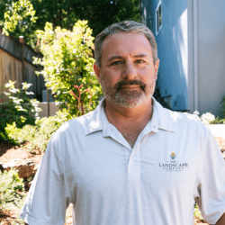
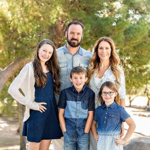

Target Audience
The audience for the site will include anyone interested in a strong Queen Creek community. The website will cater to those who are seeking to be involved in the Chamber of Commerce or would like to know more about it. Politicians, business owners, residents of Queen Creek, and travelers to the town are some of the potential people who would visit the site.
Personas

Scott is a 45-year-old resident of Queen Creek. He is a high school graduate who owns a landscaping company. He is the sole provider of his household, with a wife and four children. Scott is motivated by the potential to grow his company close to home. He is looking to collaborate with other skilled trades and to grow his business by networking.

Julie is 34 years old and interested in local politics. She is married with three children, and has lived in the town of Queen Creek for 6 years. She complete a bachelor’s degree and is employed as a Senior Civil Engineer for L D Anderson Inc. Julie uses a computer extensively throughout her workday and is comfortable using the Internet.
Scenarios
- Who is running for Town Council?
- Is there a local bike shop?
- I need to find a pest control company to spray my house.
- How to I join the Chamber of Commerce?
- What is the history of Queen Creek?
- I wonder what the weather will be like when I visit.
- What restaurant options does Queen Creek have?